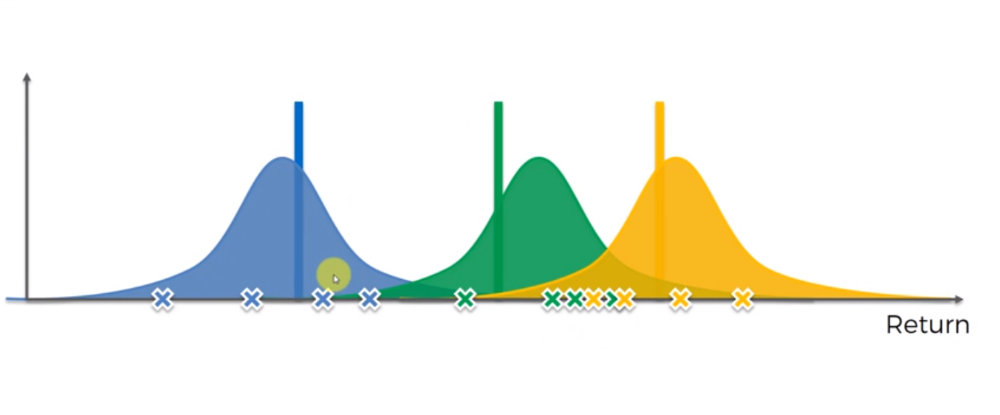

Muestreo de Thompson
ConceptoEl muestreo de Thompson es una de las heurísticas más antiguas para resolver el problema de los bandidos con múltiples brazos. Este es un algoritmo probabilístico basado en ideas bayesianas. Se llama muestreo porque toma muestras aleatorias de una distribución de probabilidad para cada brazo. Esto podría definirse como un sampler Beta Bernoulli. Aunque el muestreo de Thompson se puede generalizar para muestrear cualquier distribución arbitraria. Pero la versión Beta Bernoulli del muestreo de Thompson es más intuitiva y en realidad es la mejor opción para muchos problemas en la práctica.
Tres bandidos de múltiples brazos con las siguientes distribuciones
El Muestreo de Thompson no crea un mecanismo para resolver el problema, sino que asocia una distribución de probabilidad a cada uno de los bandidos. Distribución que se puede usar para estimar los resultados originales. A medida que aumenta el número de veces que se ha jugado con cada uno de los bandidos, la forma de las distribuciones se irá haciendo más estrechas en torno a la media. Por lo que, al obtener una muestra de cada una de las distribuciones es más probable que esta se encuentre cerca del valor esperado para ese bandido.